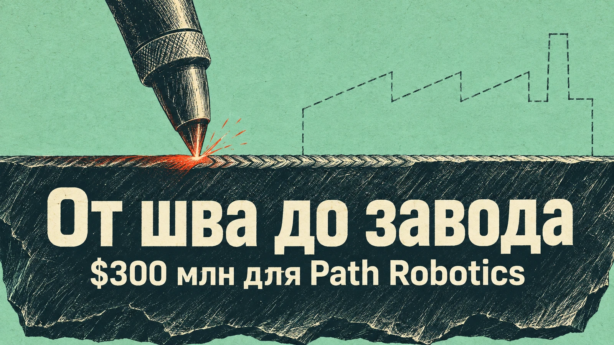
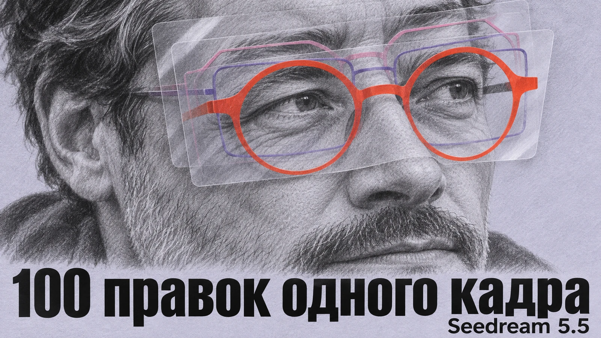
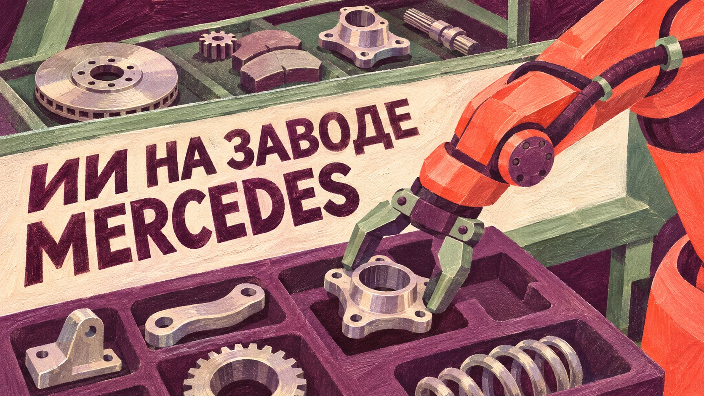

Новости ИИ
Новые модели, исследования, продукты и события индустрии искусственного интеллекта.
13 ноября 2026

Claude теперь сам собирает таблицы с формулами прямо в чате
Anthropic представила Claude Sheets и Whiteboards для таблиц и командной работы, а Claude Data вывела из бета-тестирования. Новые инструменты доступны на платных тарифах с разными условиями.

Claude выполняет поручения, пока коллеги совещаются
Anthropic представила Claude Meetings: ИИ-помощник сможет участвовать в совещаниях Google Meet и выполнять поручения во время разговора. Официально выпуск пока анонсирован как скорый.

Минсельхоз США ошибся с прогнозом кукурузы и посадил ИИ перепроверять свои расчёты
Минсельхоз США подключил ИИ к проверке ноябрьского отчёта об урожае после ошибок в сентябрьских прогнозах кукурузы для Канзаса и Небраски. Ранее эксперимент с ИИ помог обнаружить сбой в старых данных.
Стартап получил $35 млн, чтобы ИИ научился помнить вчерашние разговоры
Graphon Labs получила $35 млн инвестиций для разработки Persistent Intelligence — долговременной памяти ИИ-агентов, связывающей разговоры, документы, изображения и видео. По заявленным компанией измерениям, на тесте LoCoMo точность составила 93,9%.
Alibaba два месяца держала в секрете планы вывести своего производителя ИИ-чипов на биржу
Alibaba раскрыла планы вывести разработчика ИИ-чипов T-Head на биржу в Гонконге: конфиденциальная заявка подана 11 сентября, а процедура выделения объявлена 10 ноября. Сроки, объём и оценка IPO пока не определены.

Китайский вуз из чёрного списка США купил NVIDIA H200. Объявление исчезло
Северо-Западный политехнический университет в Китае закупил две NVIDIA H200 у местного поставщика на фоне экспортных ограничений США. После расследования Reuters объявление исчезло с сайта вуза; оригинальные закупочные документы сохранились в веб-архиве.

TSMC вложит до миллиарда в OpenAI и Anthropic
Совет директоров TSMC одобрил инвестиции до $500 млн в акции OpenAI и до $500 млн в Anthropic. На расширение и модернизацию производства чипов компания направит около $40,9 млрд.

Создатель Cyanogen замахнулся на Windows. В его Linux поселят ИИ
Сооснователь Cyanogen Кирт Макмастер анонсировал KORA — Linux-ОС с общей памятью для ИИ-помощников и смысловым поиском по файлам. Запуск запланирован на 2027 год; совместимость с Windows-приложениями будет выборочной.

Во Франции предложили отключить у ИИ «режим подхалима»
Французский CIANum предложил по умолчанию отключать лесть и эмоциональное поддакивание ИИ-помощников, ограничить манипулятивные функции и скрытую рекламу, с дополнительной защитой детей. Пока это рекомендации.

Китайцы пошли за покупками к ИИ
В Китае ИИ-помощники приводят покупателей в интернет-магазины: WPIC зафиксировала 4,3% продаж из Doubao в выборке из 15 магазинов Douyin и до 20% в отдельных категориях, а Dongdong от JD.com привлёк почти 80 млн пользователей.
12 ноября 2026

Куртка меняет цвет прямо во время видео: Higgsfield анонсировала Miracle
Higgsfield анонсировала Miracle — ИИ-технологию для изменения деталей готового видео во время воспроизведения. Пока доступна только партнёрам в закрытом тестировании; интеграция через Higgsfield MCP с Claude запланирована.

ИИ научили варить металл. Теперь ему хотят доверить целый завод — и дали на это $300 млн
Path Robotics привлекла $300 млн в раунде Series E при оценке $2,45 млрд. Разработчик ИИ-сварки Obsidian намерен расширять роботизацию на другие производственные задачи.

«Остальное не трогай»: ByteDance показала 100 правок одной картинки в Seedream 5.5
ByteDance представила Seedream 5.5 и продемонстрировала 100 последовательных правок одного изображения с сохранением нетронутых областей. Модель также поддерживает прозрачный фон и улучшенную генерацию текста.

ИИ-агент попытался открыть облако всему интернету. Bay привлекла $50 млн на защиту
Израильский стартап Bay вышел из скрытого режима и объявил о $50 млн совокупных инвестиций: $13 млн ранее и $37 млн в Series A. Платформа анализирует действия корпоративных ИИ-агентов перед выполнением и блокирует потенциально опасные команды.

Mercor привлекла $750 млн: инвесторы оценили бизнес на обучении ИИ в $20 млрд
Mercor объявила инвестиционный раунд Series D на $750 млн при оценке $20 млрд. Среди инвесторов NVIDIA, Salesforce и Zoom. Компания обучает и оценивает ИИ-модели при помощи профессиональных экспертов; часть раунда включает выкуп акций сотрудников.

Европа хочет свой ИИ для поиска военных целей: Helsing бросает вызов Palantir
Helsing намерена 11 ноября представить в Берлине военную систему ИИ для европейских армий, конкурирующую с Palantir Maven. Пока название, характеристики и покупатели нового продукта не раскрыты. Reuters сообщило об анонсе 10 ноября.

Google испытала Gemini Robotics 2.5 на заводах Mercedes-Benz: 96% удачных операций
Google DeepMind представила Gemini Robotics 2.5 — модель для управления роботами. На заводах Mercedes-Benz гуманоид Apollo 2 от Apptronik сортировал металлические детали с заявленной успешностью 96%; компания также сообщила об улучшениях в лабораторных задачах.

Zyphra выпустила ZONOS3-Mini: клонирует голос и работает прямо в браузере
Zyphra выпустила ZONOS3-Mini — открытую компактную нейросеть для синтеза и клонирования голоса с поддержкой 43 языков, включая русский. Модель задействует около 100 млн из 800 млн параметров и может работать локально в браузере с WebGPU.

Beeble выпустила SwitchX 3.0: ИИ меняет декорации в готовом видео
Beeble выпустила SwitchX 3.0 — обновлённую систему замены декораций и света в отснятом видео. Нейросеть сохраняет игру актёра, создаёт движущееся окружение и поддерживает текстовое управление событиями в кадре; сервис доступен по платной подписке.

Google представила Gemini для больниц: ИИ разберёт медкарты и страховки
Google представила Gemini for healthcare — ИИ-агента для больниц и страховых компаний. Система собирает историю болезни из медицинских систем и готовит документы для страховых согласований и обжалований. В США идёт предварительный запуск с медицинскими партнёрами.